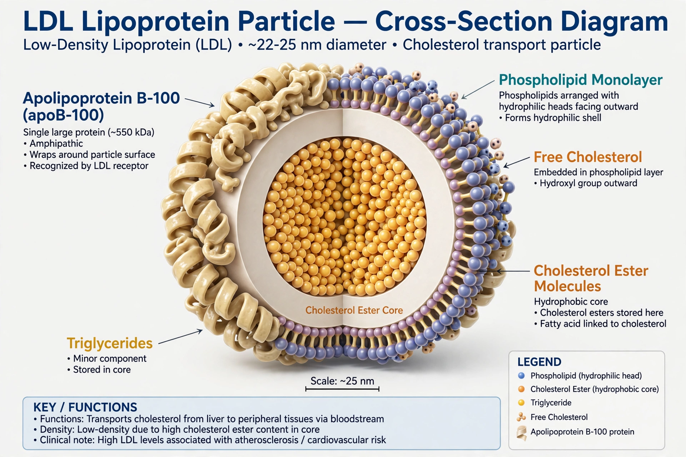

From Wikipedia, the free encyclopedia
| Low-density lipoprotein | |
|---|---|
| Abbreviation | LDL |
| Density | 1.019–1.063 g/mL |
| Diameter | 18–25 nm |
| Major apolipoprotein | Apolipoprotein B-100 |
Low-density lipoprotein (LDL) is one of the five major groups of lipoprotein that transport all fat molecules around the body in the extracellular water. LDL particles carry cholesterol from the liver to other tissues. Because elevated LDL is associated with increased risk of atherosclerosis and coronary artery disease, LDL cholesterol is commonly described as "bad cholesterol".

Each native LDL particle contains a single copy of apolipoprotein B-100 (ApoB-100), which wraps around the particle holding it together. LDL particles are approximately 22 nm in diameter and have a mass of about 3 million daltons. They contain roughly 1,500 cholesterol ester molecules in their hydrophobic core.
LDL is derived from very-low-density lipoprotein (VLDL) after the removal of triglycerides by lipoprotein lipase. LDL is cleared from the circulation by the LDL receptor on liver cells — the pathway whose discovery by Michael S. Brown and Joseph L. Goldstein won the Nobel Prize.
Oxidised LDL can be taken up by macrophages in arterial walls, forming foam cells that contribute to atherosclerotic plaques. Lowering LDL cholesterol with statins reduces cardiovascular risk.
LDL cholesterol is typically estimated from a lipid panel using the Friedewald equation. Guidelines generally advise levels below 100 mg/dL (2.6 mmol/L) for high-risk patients.
See also: High-density lipoprotein, Hypercholesterolemia.